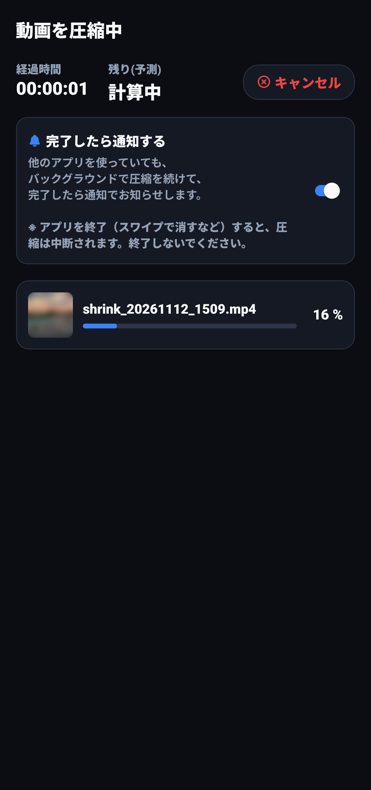
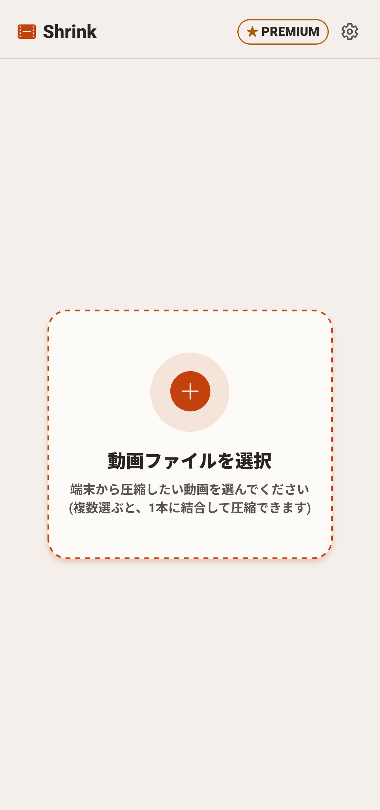
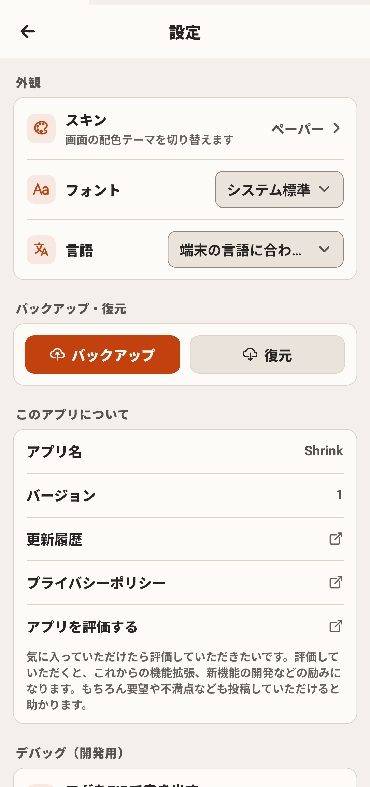

📖 この画面でできること
「動画の圧縮」は、スマートフォン内の大きな動画ファイルを、指定した目標ファイルサイズ（MB）へ最適化して軽量化する主要機能です。


🚀 圧縮の基本ステップ
圧縮したい動画を選択する
ホーム画面の「動画を選択」ボタンをタップし、端末のギャラリーやファイル管理アプリから圧縮したい動画（MP4, MOV, WebMなど）を選びます。
動画を選択すると、上部にプレビュー枠が表示され、現在の元動画の容量（例: 54.3 MB）と長さが自動で読み込まれます。
目標ファイルサイズ（プリセット）を選択する
画面中央に並んでいる「目標ファイルサイズ」カードの中から、動画を送りたい相手やサービスに合ったプリセットをタップして選びます（青色でハイライトされます）。
| プリセット容量 | 主な用途・対応サービス | 特徴 |
|---|---|---|
| 25 MB | Gmail, Yahoo!メール, Discord (無料) | 主要メールサービスの添付ファイル上限にぴったり収まる定番サイズ |
| 20 MB | 一般的なメール送信用 | 社内メールや通信環境の安全マージンを考慮したサイズ |
| 16 MB | WhatsAppのメディア共有上限（16MB）に完全対応 | |
| 10 MB | Outlook, キャリアメール | 大手キャリアメールやOutlook添付の厳格な上限に合わせた設定 |
| 50 MB | Discord Nitro Basic | Discord Nitro Basicの上限サイズに合わせた高画質設定 |
| 100 MB | LINE, Microsoft Teams, Slack | ビジネスチャットやLINEで高画質を保ったまま送れる上限サイズ |
| 500 MB | X (旧Twitter), 各種クラウド共有 | 長尺の高解像度動画をSNS投稿用にバランスよくまとめる設定 |
詳細設定（音声削除・位置情報削除）を選ぶ
画面下部の「詳細設定」欄で、必要に応じてスイッチをオンにします。
- 音声を削除: オンにすると、動画内の音声トラックを削除して無音化します。音声データ分の容量が浮くため、映像のビットレートをより高く保つことができます。
- 位置情報を削除: オンにすると、スマホカメラで撮影した際に記録されたGPS位置情報メタデータを完全に消去します。プライベートな場所で撮影した動画をSNSや掲示板へ安心して公開できます。
「⚡ 圧縮開始」をタップする
画面最下部の青い「⚡ 圧縮開始」ボタンを押すと、エンコード処理が始まります。
処理中は進行バーと完了パーセントが表示されます。途中でやめたい場合は「キャンセル」を押せばいつでも安全に中断できます。また、画面を閉じたり他アプリを開いたりしても、バックグラウンドで処理が続行されます。
🛠️ プリセットの追加・編集・並び替え
よく使う特定のファイルサイズがある場合、自分専用のカスタムプリセットを自由に追加・管理できます。


自前プリセットの追加
- プリセット一覧の最後にある「＋ プリセット追加」ボタンをタップします。
- 「目標サイズ（MB）」に任意の数値（例:
8MBや30MBなど）を入力します。 - 「用途・メモ（任意）」に、わかりやすいラベル（例:
社内チャット用、ブログ用など）を入力します。 - 「保存」をタップすると、一覧に新しいプリセットが追加されます。
プリセットの編集・削除
各プリセットカードの右上にある鉛筆アイコン（✏️）をタップすると、編集モーダルが開きます。容量やラベルの修正ができるほか、自前で追加したプリセットの場合は「このプリセットを削除」ボタンから削除も可能です。
長押しドラッグで並び替え
よく使うプリセットを先頭（左上）に置いておきたい場合、プリセットカードを長押し（約0.3秒）するとカードが浮き上がります。そのまま指を離さずにドラッグしてお好みの場所へ移動し、指を離すことで直感的に順番を整理できます。
❓ よくある質問（FAQ）
Q 圧縮後の動画の画質はどれくらい保たれますか？
Shrinkでは、動画の再生時間と目標容量のバランスから、解像度（1080p, 720p, 480p等）と映像ビットレートを自動で最適計算します。極端に小さな目標値を指定しない限り、スマホ画面やPCで自然に視聴できる鮮明な画質を維持します。
Q 元動画より大きな目標サイズを指定した場合はどうなりますか？
元動画のファイルサイズが指定した目標サイズよりも小さい場合、無駄な再エンコードによる画質劣化や容量増加を防ぐため、案内メッセージが表示されます。
Q どのような動画ファイル形式に対応していますか？
Android端末の標準カメラで撮影されたMP4動画をはじめ、MOV、WebM、MKVなど主要な動画コンテナ形式を幅広くサポートしています。